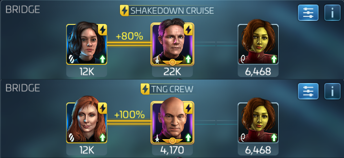
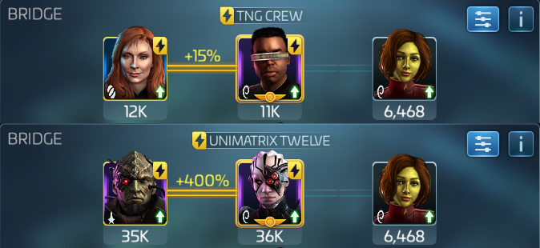
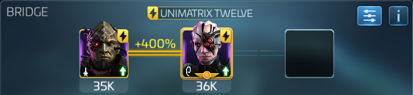
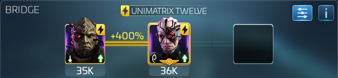

Cardassian Armadas
Uncommon cardassian armadas need to be handled differently than rare and epic armadas.
Uncommon Cardassian armadas
Uncommon cardassian armadas start with 20% critical chance, and 300% critical damage. They also gain 10% critical chance every round, so after 8 rounds they have 100% chance of scoring a critical hit.
Armada Leader
Luckily we can reduce critical damage to 0 by stacking Gaila, who reduces critical damage by 50%, or by 110% when paired with either Picard/Beverly or Pike/Moreau. Through a quirk in the game's coding, if the leader of the armada runs either Pike/Moreau/Gaila, or Picard/Beverly/Gaila, the rest of the armadas' Gailas will inherit the 120% boost from the captain's maneuver. Picard Beverly Gaila is preffered, because moreau's officer ability doesn't work in armadas.
non-lead crews
Since incoming damage is 0 after 8 rounds, there is no need to do high damage. The rest of the group only needs to crew for mitigation, with Gaila sidecar. I recommend running a loot crew with a mitigation officer to be sure you survive the initial damage.
Rare and Epic Cardassian armadas
Dealing with critical damage
Rare and epic Cardassian armadas have a flat 20% critical chance that doesn't increase, but 375% and 450% critical damage resepectively. The easiest way to deal with them is to have one person run Troi/Worf for 20% crit chance reduction, with the last officer slot going to either more mitigation or utility.
Utility
 

After criticals are negated, we need to bring hull breach and burning. Ideally Sisko/Miles, with the last slot going to either; gorkon or lorca for hull breach, Nero or Georgiou for burning.
Damage
Changeling Kira doesn't seem to scale well. Sisko/Miles/Six of Eleven is the best damage output at the moment; this may change with new DS9 armada officers